Copper
| 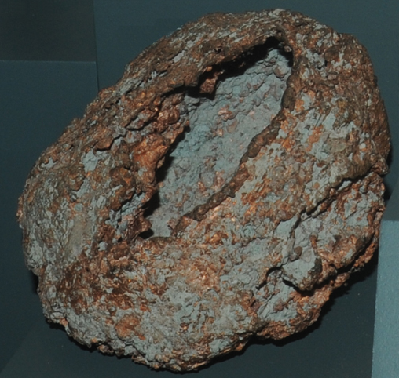 | Copper is one of very few elements that are found in essentially pure form in nature. These copper metal samples are displayed in the Smithsonian Museum of Natural History.
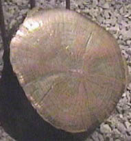
One of the more unusual forms is exhibited in this cross-section of a post which served as a support in a copper mine. It has been partially infilled and replaced by copper from the ground water in which it was submerged. The post is about 12 cm in diameter.
The metallic form at left measures about 15 cmwide.
|
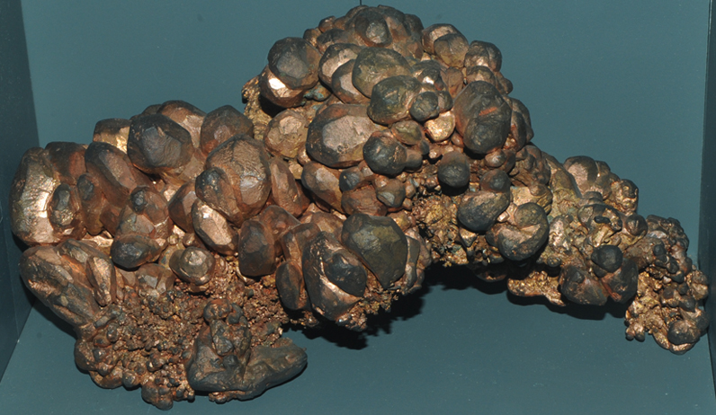
This copper sample is from New Cornelia mine, Ajo, Arizona. It is about 30 cm across.
| 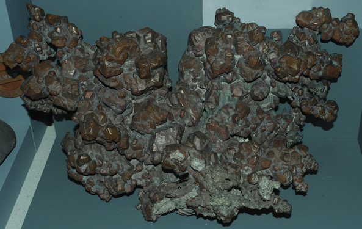 | This massive sample of copper metal is from Keweenaw Peninsula, Michigan. It is about 60cm wide. |
Copper metal specimens from Michigan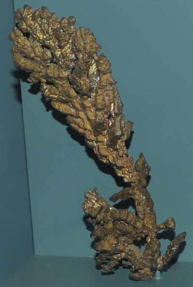Calumet, Michigan (~9x28 cm)
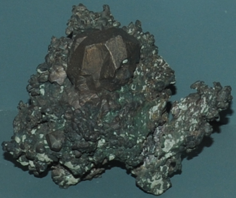Houghton, Michigan (~14x11 cm) | 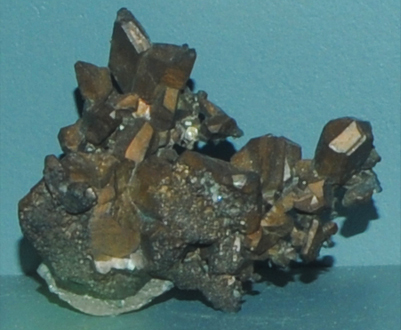Houghton, Michigan (~11x10 cm)
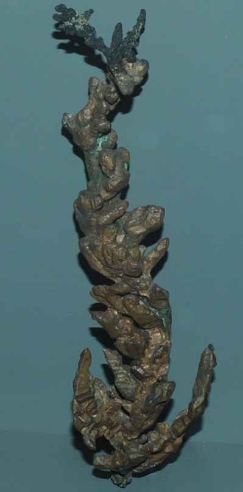Keweenaw Peninsula, Michigan. (~10x38 cm) |
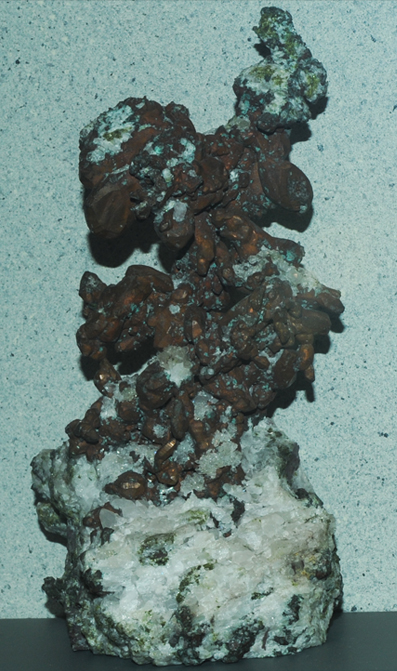Copper with quartz from Keweenaw County, Michigan (~18x40 cm)
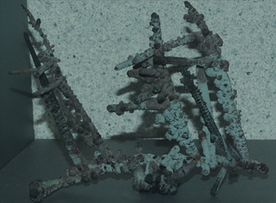Copper from South mine, Broken Hill, New South Wales, Australia (~15x11 cm) | 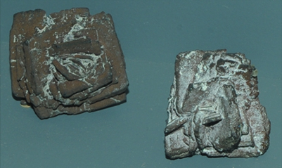Copper from Copper Glance and Potosi mine, Grant County, New Mexico. These samples are on the order of 5 cm.
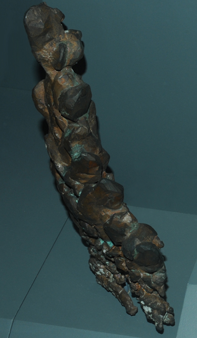Natural copper ingot from Keweenaw Peninsula, Michigan (~8x43 cm) |
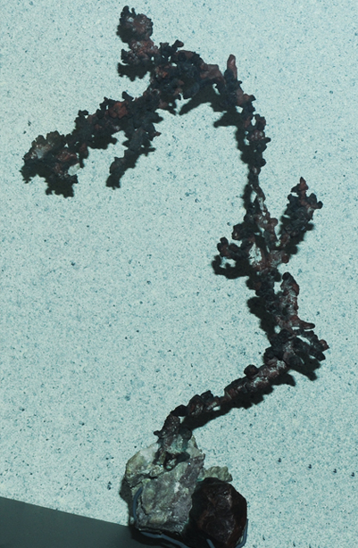 Keweenaw County, Michigan (~14x35 cm)
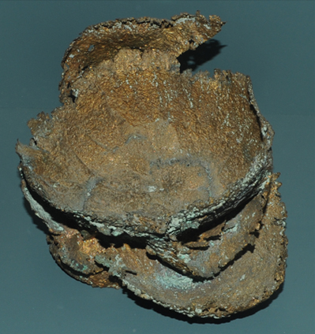This unusual copper metal sample from Keweenaw Peninsula, Michigan has been named "Copper Skull". It is about 20x25 cm. | 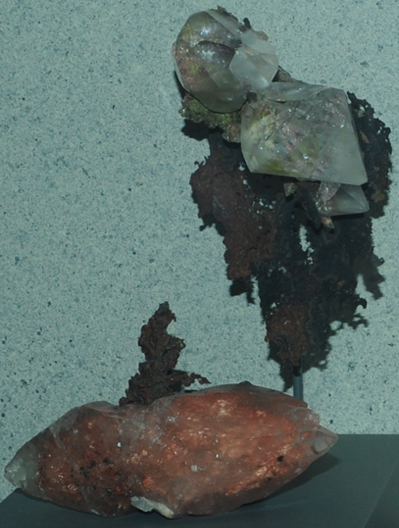Copper with calcite from Keweenaw Peninsula, Michigan. Pair is about 20x28 cm.
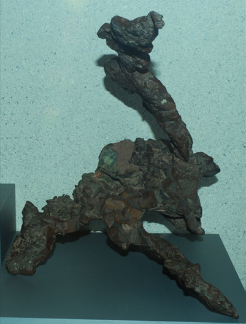This massive copper metal formation from Keweenaw Peninsula, Michigan is about 22 cm wide at the base and about 25 cm high. |
Copper is one of the few elements that can be found in pure elemental form in nature, as shown by these samples. But the bulk of the copper resource is found in other minerals, such as those listed in this table. | |
Mindat: Copper
|
Index |